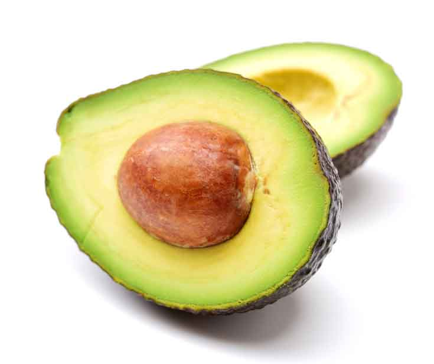
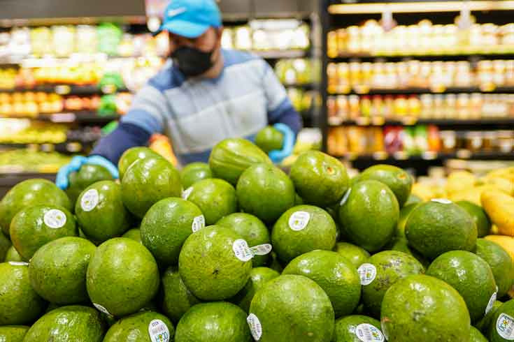

<div class="container" style="width: 80%;margin-top: 64px;max-width: 1080px;margin-bottom: 100px;">
    <div class="row">
        <div class="col col-12 col-md-9">
            <div class="artcont">
                <h1 class="articletitle">PLANTAINS! A STAPLE FOOD IN LATIN AMERICA’S COUSINE</h1><span
                    class="artdata">by admin | Jul 14, 2022 | Uncategorized | 0 comments</span>


                <p><span style="font-size: 14px;">Avocados have become an increasingly popular food in recent
                        years. It’s the main ingredient in guacamole and can be prepared in many other dishes or
                        simply eaten plain. Although not sweet, avocados are classified as a fruit. They are
                        believed to have originated in Mexico or Central America, with Mexico being the leading
                        producer worldwide. Riverview Fresh Market proudly offers the best quality avocados from
                        local growers and the Hass Avocado imported from Mexico.</span></p>
                <p><span style="font-size: 14px;">Depending on the variety, avocados may be round or pear-shaped,
                        green or black, and small or large. The skin is typically bumpy, and they continue to ripen
                        after harvesting. If you are planning to use an avocado immediately after purchase, choose a
                        ripe one with dark green or almost black skin. It should yield to pressure when squeezed.
                        Avocados with light green skin that are very firm are unripe and will need to sit a few days
                        before eating. If the avocado has dark shriveled skin, dents, or spots of mushy flesh, it
                        may be overripe and unpleasant to eat.</span></p>
                <p><span style="font-size: 14px;">Avocado oil is extracted from the flesh of pressed avocados. It
                        can replace other liquid cooking oils and has a very high smoke point of almost 500°F making
                        it a great oil to cook your favorite dishes. Avocado oil is often compared with olive oil
                        because they are both rich in the fatty acid, oleic acid, but avocado oil has a more neutral
                        flavor.</span></p>
                <p><span style="font-size: 14px;">Avocados deliver a variety of health benefits and are a versatile
                        ingredient when cooking! A whole medium avocado contains about 240 calories, 13 grams
                        carbohydrate, 3 grams protein, 22 grams fat, 10 grams fiber, and 11 grams sodium. Along with
                        their low sodium levels, avocados contain no cholesterol. Many people think eating avocado
                        is fattening due to its high-calorie content. However, avocado consists only of healthy
                        fats. They contain nearly 20 vitamins and minerals. Let’s see some ways avocados are good
                        for your health:</span></p>
                <p><span style="font-size: 14px;"> ✓ They are rich in
                        fiber and low in carbs which is why they promote weight loss.</span><span
                        style="font-size: 14px;"> </span></p>
                <p><span style="font-size: 14px;">✓ Avocados Lower the
                        risk of heart diseases and cholesterol</span></p>
                <p><span style="font-size: 14px;">✓ Avocados contain high
                        levels of potassium (more than bananas). High potassium intake also reduces the risk of
                        heart attacks, high blood pressure, and kidney failure.</span></p>
                <p><span style="font-size: 14px;">✓ They prevent
                        Osteoporosis. An essential nutrient for good bone health is Vitamin K; a quarter of the
                        daily requirement of this vitamin can be obtained from only half an avocado.</span></p>
                <p><span style="font-size: 14px;">✓ Avocados help us
                        maintain a healthy skin. They have carotenoids that reduce UV-induced inflammation of the
                        skin; its oil also assists against skin damage.</span></p>
                <p><span style="font-size: 14px;">✓ Avocados help Improve
                        oral health. Regulated consumption of avocados also enables to prevent bad breath. The
                        antioxidant flavonoids present in this fruit kill the bacteria that cause bad breath. The
                        potassium content fights tooth decay and cavities.</span></p>
                <p><span style="font-size: 14px;">✓ Avocados are rich in
                        folate. Folate is a B vitamin that is important for proper brain function and healthy
                        pregnancies.</span><span style="font-size: 14px;"> </span></p>


                

                <p><strong>Here are some ideas to use avocado:</strong></p>
                <p><span>• Mashed to prepare the most delicious guacamole</span></p>
                <p>• Diced and sprinkled into salads, soups, tacos, or whole grains</p>
                <p>• Blended into smoothies</p>
                <p><span>• Mashed as a spread on sandwiches and crackers</span></p>
                <p>• Mashed onto whole grain breakfast toast</p>
                <p>• Sliced and rolled into sushi</p>
                <p>• Cut in half, drizzled with a squeeze of lemon or lime juice, and eaten with a spoon as a snack
                </p>
                <p>• Diced to prepare a healthy and delicious Avocado Salad! Here is a recipe to quickly
                    prepare in 15 minutes:></p>
                <p>&nbsp;<strong>Ingredients:</strong></p>
                <p> 2 Avocados, peeled and diced<br> 1 red onion, chopped<br> 1 green bell pepper, chopped <br>
                    1 large ripe tomato, chopped <br> ¼ cup chopped fresh cilantro<br> ½ juice of a fresh
                    lime<br> Salt and Pepper to taste</p>
                <p><strong>Directions</strong>:<br>1. Combine the avocados, onion, green pepper, tomato, cilantro,
                    and lime juice in a large bowl. Gently toss until evenly coated. Season with salt and pepper to
                    taste. <br>2. Enjoy it<a
                        href="https://riverviewfreshmarkets.mybcard.net/contact-3/#map">!</a><strong
                        style="font-size: 14px;"></strong></p>

                


                <p><a href="https://riverviewfreshmarkets.mybcard.net/contact-3/#map"></a><strong
                        style="font-size: 14px;">Stop by Riverview Fresh Market, your favorite Latin Market and
                        include the ingredients in your shopping list! <a
                            href="https://riverviewfreshmarkets.mybcard.net/contact-3/#map">Visit us</a></strong>
                </p>
                <p><span>No time to cook? Our Deli prepares a delicious and colorful Avocado Salad ready to eat.
                    </span><strong><a href="https://riverviewfreshmarkets.mybcard.net/contact-2/#map">Order
                            now!</a></strong></p>

            </div>
        </div>
        <div class="col col-12 col-md-3 recentcol">
            <h1>Recent post</h1>
            <app-menuarticles></app-menuarticles>
           
        </div>
    </div>
</div>